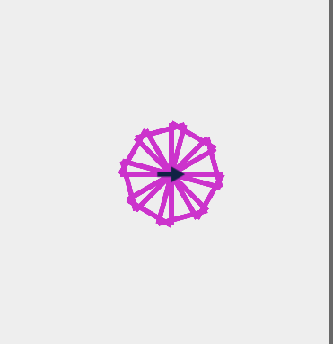
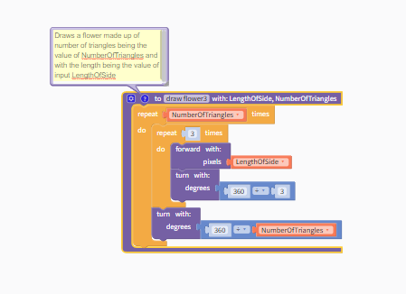
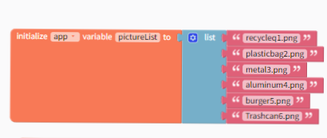
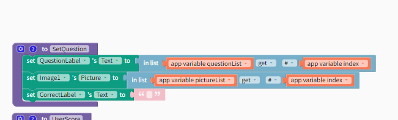
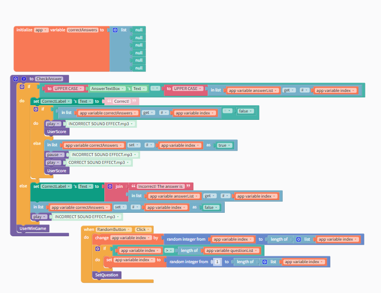
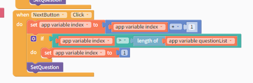
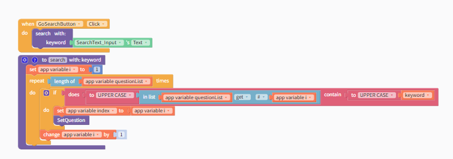
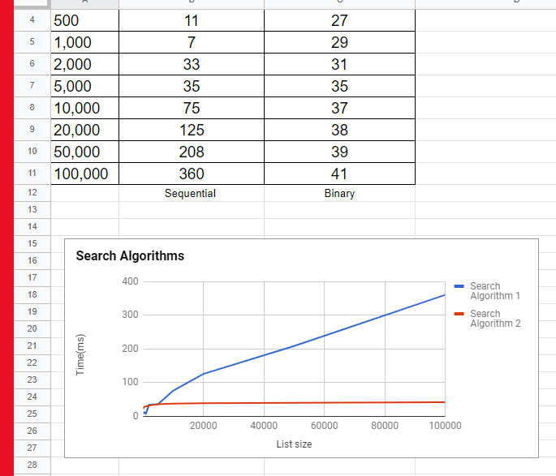

1.
a.

b.

2.
a.The limitation of the procedure forward is that it only goes a certain
amount and you have to repeat many times for a certain distance.
b. Adding a parameter like distance allows the use of changing the distance of the code using a variable that can change.
3.
a.The limitation of the procedure turn is that it only goes a certain
amount and you have to repeat many times for a certain rotation.
b. Adding a parameter like angle allows the use of changing the angle of the code using a variable that can change.
1. Select random number
Get guess from player
If guess is too low, display Too low
If guess is too high, display Too high
If guess is correct, display Correct
2. To guess a number between 1 and 100, the maximum number of guesses for the algorithm would be 7.
3. To guess a number between 1 and 500, the maximum number of guesses for the algorithm would be 9.
4. The best way to search would be going through 1 card 1 by one because if you search every 5 cards, you could pass it.
5. When ordering off a menu, you can search sequentially until you find something you'd like. By going through each item on the menu, you would compare each meal to what you want.
1. The radix and bucket sort are not comparison sorts because radix sorts 1 by 1 and bucket sort puts them in groups.
2. Bucket sort would be the fastest because there are multiple decks of cards and it is faster to sort many at once.
1.
a. One of the list created in this program is the list of pictures. The name of this list is "pictureList."
b.

c.

d. The data contained in this list represent the image to the questions given. If the user clicks next then the image will change with the next question.
e. Without this list, only an image would be displayed and the user wouldn't know what to do with it.
2. This app used parallel lists to organize the data and determine the order. The parallel structure of this list is necessary because without it, the program would be unable to determine the index of a value in the list and would not be able to determine which is correct or incorrect.
3.

4.

The code works because it goes by the length of the list.
1.
a/b. 
c. The search function allows users to easily access a question by typing in keywords.
d. The search function allows the user to easily access the question they want instead of having to click next many times.
e. The search algorithm uses a repeat and counter variable that basically counts up to the max number of questions and when it finds the keyword it will set the questions and images to the set that contains the keyword.
2.
a. Searching with keywords displays the matching questions and images based on user input of a keyword.
Searching by number displays the matching questions and images based on user input out of a numerical order.
b. The search with keywords algorithm uses a repeat and counter variable that basically counts up to the max number of questions and when it finds the keyword it will set the questions and images to the set that contains the keyword.
The search with number algorithm counhts up from the beginning of the set of questions until it reaches the user's input number.
c. The user input within the search if returned as true will result in displaying the correct image and question by calling the index.
3. Repeat Length of list times
if text contains x then
display question
display image
1.
a/b. 
2. After collecting data and seeing the graphs we came to the conclusion that Search algorithm 1 is a sequential sorting algorithm and Search Algorithm 2 is a Binary sorting algorithm. We thought this because the time it takes for Search Algorithm 1 is longer compared to Search Algorithm 2. Since knowing that binary sorting algorithm is faster than a sequential sorting algorithm we know that Search Algorithm 1 is the sequential sorting algorithm.
1. The optimal scheme for withstanding a brute force attack of at least 10 years would be a password with 9 characters that consists of a combination of uppercase, lowercase, numbers, and special characters.
2. We would have to modify the password to make it have 11 characters consisting of uppercase letters, lowercase letters, numbers and special characters to withstand a 10 year attack by the computer.
3.
a. An optimal password scheme would have 11 characters.
b.It would have both upper/lowercase, numbers, and special characters.
4. They would propose the fastest method which is 4.1 miles.
5. Burton
Golden Bridges
Hillcrest
Dolores Huerta
Mission
6. The most optical route is the safest and fastest one.
7.
a. Intractable Problems are problems that are impossible to solve, something more theoretical.
b. It is good for passwords because it is harder to solve.
8. A heuristic in my everyday life is deciding what to eat for breakfast the day before because if I don't then I have no idea what to eat and I would be late.
1. It took the simultaneous processing approach to be used for sequential tasks plus the longest of its concurrent tasks. In the pogil activity, the cards were grouped into 4 piles, and the 4 team members each sorted through the cards to find the card in parallel. The activities got faster because more processes ended up being involved.
2. 9:00 - 9:11. 11 Minutes Total
3. I think if we doubled the number of processors we would be able to octuple in speed. If we are all on task then the proccess should work without consequence.
4. Parallel sequencing saves time, enabling programs to be carried out in a shorter wall clock time, which in a smaller amount of time often addresses larger problems.
1. Web search tools will track and save your search history to help you find what you're looking for. This means that the next time you search, it will recommend material to you based on your interests.
2. Google employs a sorting algorithm known as PageRank. This method sorts over information indexes. They are all graded based on their dependability, amount of times referenced, and sources cited within the article. This algorithm is used to place the most valuable and relevant links at the front of the search results page.
3. A captcha is a mechanism that is used to avoid undesired sources like spam. Captcha employs a variety of ways to evaluate whether or not the user is, in fact, a person with a genuine desire to access what the captcha is protecting. These generally include inputting letters into a box, identifying certain photos, or matching shapes.
4. This is something I agree with because search has made it easy and simple to acquire information since the beginning of the internet.
5. Figure 4.10 shows a screenshot of a Google search result in the United States, while Figure 4.11 shows a screenshot of a Google search result in China. . The Chinese search results are biased, while the US ones are more factual and neutral.
6. I think mobile computing is both beneficial and harmful to web searches because it makes it easy to search but people would lose their privacy.
7. I would keep my search history because when I forget something I can find it easier.
8. Yes if several sources agree with eachother.
9. It is important to talk about what information you choose to put on the internet because social implications like cyber bullying could happen.
10. Personal and general information is used to create search trends. The advantage of this is that the most popular and reliable sites will display first on the results page, resulting in a better user experience because it saves time. As a result of selecting the most popular sites, search trends may exclude some sites that you might have wanted to visit.
11. The title of this article is "What is an Algorithm?", by Jessica Teran. It was published on October 16, 2018. This article talks about relevancy, individual factors, and off-page factors. The goal of a search algorithm is to quickly identify and deliver the most relevant or valuable information to the user. All search engines differentiate certain things like most relevant, most useful or even spam. The result's end using rankings that help the user the most.
Relevancy is a major element in search engines. This is because personalized searches and advertisements are more likely to be clicked or displayed. Keywords, which are also important factors, rank higher when they appear in titles, headlines, and the first few phrases. Search engines may scan the text of a website to see how keywords are utilized and if the page is relevant to what you're looking for. The frequency with which you search for keywords influences a site's relevance.
Search engines use a variety of variables to determine how they search and crawl websites, how they penalize sites for keyword spamming, and how many websites they index. Google contains more pages than Bing and provides a separate set of search results. Things that help ranking include hyperlinking and click-through measure. Because search algorithms are so important in search engine optimization and site rankings, you can make changes to a site to improve its ranking.
© 2004- alvital.com. All rights reserved. Please see our privacy policy for more details.